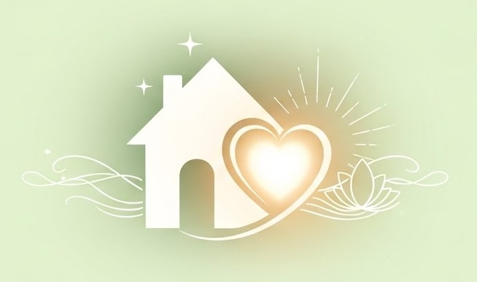

<<<<<<< HEAD
HJEM OG HJERTE - Blid rensning af HJEM OG HJERTE - med visdom fra livet
=======
Blid rensning af HJEM OG HJERTE - med visdom fra livet
>>>>>>> b8d46b2 (Add Google Analytic, adding a new "Fortællinger" section, and refining text for clarity and consistency. Update title and header to "HJEM OG HJERTE" for branding alignment.)
HJEM OG HJERTE

ENERGI OG HARMONI – med visdom fra livet
<<<<<<< HEAD
Velkommen til HJEM OG HJERTE. Her finder du støtte til at skabe harmoni både i dit hjem og i dit liv. Gennem clearing kan vi rense energierne i dit hjem, og gennem energetiske samtaler kan vi sammen udforske de veje, der venter på dig. Alt sker med nænsomhed, kærlighed og dit tempo i fokus.
Føler du dig kaldet? Du er hjerteligt velkommen til en uforpligtende snak.
=======
Velkommen til HJEM OG HJERTE. Her finder du støtte til at skabe harmoni både i dit hjem og i dit liv. Gennem Clearing kan vi rense energierne i dit hjem, og gennem energetiske samtaler kan vi sammen udforske de veje, der venter på dig. Alt sker med nænsomhed, kærlighed og dit tempo i fokus.
Føler du dig kaldet?
Du er hjertelig velkommen til en uforpligtende snak.
>>>>>>> b8d46b2 (Add Google Analytic, adding a new "Fortællinger" section, and refining text for clarity and consistency. Update title and header to "HJEM OG HJERTE" for branding alignment.)
Clearing
En nænsom og samtidig stærk og kraftfuld proces, hvor jeg opløser tung, fortættet atmosfærisk* energi og hjælper eventuelle afdøde sjæle kærligt over i lyset. Clearing renser blidt ud, bryder gamle mønstre og løfter energien – så du naturligt kan opdage dine potentialer og hvad der virkelig nærer dig.
En nænsom, hjertevarm rejse ind i de usynlige energier, der omgiver dine valg, relationer og drømme. Sammen opløser vi tågen, løfter slør og åbner for de potentialer, der allerede lever i dig – altid med kærlighed, respekt og dit tempo for øje.
En hjertelig tak til alle mine kunder, hvor jeg er inviteret ind og har arbejdet med helheden i deres hjem. Her er nogle af de fine tilbagemeldinger, jeg har modtaget:
"
Et modent ægtepar oplevede nedsat livskvalitet pga søvnproblemer og fysiske smerter.
Efter Clearingen:
Vi sover meget bedre uden at vågne og de fysiske smerter er aftaget - vi har det meget bedre. Tak for jeres indsats.
Kirsten M.
"
En kreativ kvinde som var ved at gennemføre en stor renovering, og som følte uro og havde mange tanker om livet - skrev følgende efter clearingen:
"Jeg har haft en fysisk udrensning og er opmærksom på at grounde mig selv og mærke kroppen. Mit søvnmønster er ændret og jeg mærker en ny sikkerhed i hvad der er rigtigt for mig mht arbejde og kærlighed."
M.D.
"
Et yngre par havde svært ved at finde årsagen til uafklarede praktiske og jobmæssige spørgsmål i hjemmet . Efter clearingen:
"Den ubeslutsomhed og uklarhed vi oplevede, er nu placeret og håndteret. Samtidig var der en følelse af at være 'skåret over på midten' - det giver så meget mening i forhold til min skriveblokering, som jeg nu genkender og nu er der åbnet op for sluserne.
Et andet tankeprojekt er sat fri og blevet klart."
M.P.
"
Et hjem med ønsket om mere ro og bedre familiedynamik skrev efterfølgende:
"Energien i huset var så ren og klar, elskede det. Helt nyt. Et felt af frihed og plads til alle. Store stemningsskift i familien. Et stort skift efter krystallerne blev placeret og gravet ned."
L. S.
"
Familie oplevede manglende sammenhæng mellem gammel og ny tilbygning, samt visse rum børnene ikke ville opholde sig i. Vi foreslog indretningsmæssige små ændringer, som støttede familien i ønskerne.
Efter clearingen:
Vores datter har uvidende om clearingen bedt om igen at sove i sit værelse og vi har en oplevelse af huset som en helhed og har planer om ændringer i indretningen.
Z
"
En familie i et 3 etagers hus oplevede dårlige energier, kulde og lys, der blev tændt og slukket og ønskede at få fjernet den uro, det førte med sig. Det havde foregået gennem flere år.
Efter clearingen meldte familien tilbage, at de havde dels ikke mærket mere til kulde og personen, de havde set. Og at de havde startet en større oprydning og ville fjerne ting og billeder, som ikke længere var nødvendige. De blev gladere og syntes huset var lysere og lettere efter clearingen.
—
"
En kvinde havde fundet sin drømmelejlighed, men over tid blev energien pludselig så dårlig, at hun overvejede at flytte igen. Kvinden var selv opmærksom på energierne og havde forsøgt at gøre alt, for at genvinde den rare stemning i lejligheden, men der blev ved at hænge noget ved, som var ubehageligt. Vi fjernede de påvirkninger, der var fra de omkringliggende lejligheder og afdøde, så tilbagemeldingen efter denne clearing var:
Der er nu meget mere ro og jeg føler mig igen tryg, her er så lyst og let, og jeg vil sætte flere krystaller som I har foreslået. Tak for hjælpen !
E.T.
Om mig
Størstedelen af mit arbejdsliv har jeg tilbragt i en stor international virksomhed inden for HR. Her har mit fokus altid været på mennesker: at skabe udvikling, balance, forståelse og sammenhæng. Jeg har brugt min intuition til at støtte samarbejder, finde det rette teammedlem, coache ledere og belyse nye muligheder, – så relationer kunne vokse sundt og autentisk, med øje for både individet og helheden.
Jeg har en bred baggrund med både formelle og spirituelle uddannelser, og dog er det vigtigste forståelsen, værdierne og kærligheden til livet, der er fundamentet for alt arbejdet.
Udvikling i livet er vanskelig at beskrive og forklare, det skal opleves. Det har været en del af mit liv i mange år, og tog især fart, da jeg mødte Tavisha (Tavisha.dk) - Danmarks dygtigste seer og mystiker. Da Visning af Underet ( Clearingen) blev udbudt som uddannelse, startede jeg og blev vist mange undere :-) ud over håndværket. Jeg følge mig også kaldet til at deltage i Tavishas rejser til mit elskede Frankrig, hvor vi vandrede hellige steder og fik de smukkeste indsigter og renselser. Senest har Indien fået en særlig plads i mit hjerte, det er noget ganske særligt at være ved Ganges flodens energi. Livet bliver ved at give og give, når du lytter og flyder med.
I flere år har andre opfordret mig til at dele min visdom – og nu er tiden inde. Jeg står klar til at være ved din side, dele den visdom der lever i mit hjerte, og sammen udforske, hvad energien åbner for.
Føler du dig kaldet?
Du er hjertelig velkommen til en uforpligtende snak. Ring til mig, så vi kan mærke, om vi skal tage næste skridt mod en energetisk livssamtale.
Clearing – en invitation til harmoni og nyt flow i dit hjem
Forestil dig et hjem, der føles let, indbydende og fyldt med positiv energi. Det er præcis, hvad Clearing kan skabe – et ældgammelt og kraftfuldt værktøj, der løsner blokeringer og åbner for klarhed, indsigt og nyt perspektiv. Jeg har selv mærket magien: Livet bliver enklere, mere harmonisk og rigere – og jeg glæder mig til at dele denne smukke livets gave med dig.
Hvad er Clearing egentlig?
Det er en nænsom og samtidig stærk og kraftfuld proces, hvor jeg opløser tung, fortættet atmosfærisk* energi og hjælper eventuelle afdøde sjæle kærligt over i lyset. Alt er energi – og med blidhed, intention og lys kan vi skabe bevægelse i energien og nye muligheder,
Mange kommer til mig, når de:
✦Mærker et subtilt ubehag i hjemmet
✦Føler stagnation i hverdagen eller projekter
✦Længes efter bedre flow i familien
✦Søger at fremme salg af boligen
Ofte er det små, usynlige ting, der holder os tilbage. Clearing renser blidt ud, bryder gamle mønstre og løfter energien – så du naturligt kan opdage dine potentialer og hvad der virkelig nærer dig.
Sådan oplever du en Clearing – trin for trin, med omsorg
Jeg besøger dig hjemmet – du viser mig rundt i ro og mag.
Du overlader huset til mig for en stund (røgalarmer slukkes, kæledyr får frisk luft).
Med røgelse, klokker og intuition renser jeg hvert hjørne – nænsomt og intuitivt.
Du får en personlig lydfil med de anbefalinger og budskaber, der dukker op undervejs.
Vi deler de vigtigste indsigter bagefter – som en gave, du kan arbejde videre med i dit tempo.
Det er en tryg og livsændrende oplevelse, skræddersyet til dig.
*) atmosfærisk energi er den livskraft. der gennemstrømmer hele universet, dig og dit hjem. Den energi, der ophober tanker, følelser og mønstre, dynamikker mellem mennesker - og det er denne helhed vi løfter og forløser i en Clearing.
Er du et sted, hvor du ønsker forandring?
Hvis du mærker et lille ja inden i, så ring til mig. Lad os starte med en uforpligtende, hyggelig snak – sammen finder vi ud af, hvordan vi kan skabe rammerne for en Clearing.
Samtaler – en kærlig invitation til dybere indsigt og klarhed i dit liv
Essensen af mine energetiske livssamtaler: En nænsom, hjertevarm rejse ind i de usynlige energier, der omgiver dine valg, relationer og drømme. En sådan indsigt kan løfte byrden, skabe fred og flow – og jeg glæder mig til at guide dig med blid visdom.
Hvad er en energetisk samtale?
Det er en fortrolig stund, hvor vi sammen dykker ned i energierne omkring dig. Med min intuition som kompas lytter vi til, hvad der blokerer eller nærer – hvad der kalder på forandring, og hvad der allerede venter på at blomstre.
Mange søger mig, når de:
✦Står over for svære valg og længes efter klarhed
✦Føler sig fastlåst i relationer eller mønstre
✦Ønsker at forstå deres indre stemme bedre
✦Længes efter mere mening og glæde i hverdagen
Sammen opløser vi tågen, løfter slør og åbner for de potentialer, der allerede lever i dig – altid med kærlighed, respekt og dit tempo for øje.
Sådan oplever du en samtale – trygt og personligt
Vi mødes enten fysisk, online eller pr. telefon – du vælger, hvad der føles bedst.
Du deler det, der ligger dig på sinde – ingen forberedelse nødvendig.
Jeg tuner ind på energierne og deler de kærlige budskaber og indsigter, der viser sig.
Du modtager en lydoptagelse af samtalen, så du kan lytte igen i ro.
Efterfølgende støtte i 7 dage – jeg er her for dine refleksioner og spørgsmål.
Det er en blid gave til dig selv, der ofte åbner døre, du ikke vidste eksisterede.
Jeg anvender af og til Oshos Zen Tarotkort, som er en fin guide, der giver nye ord og perspektiver på emnet. Jeg har ved flere lejligheder oplevet, hvilken hjælp og klarhed det gav i forhold til de personlige emner.
Føler du et stille kald?
Hvis dit hjerte siger ja, så ring eller skriv til mig. Lad os starte med en uforpligtende, hyggelig snak – helt gratis og uden pres. Sammen mærker vi, om det er tid til at tage det næste skridt mod dit lysere liv.